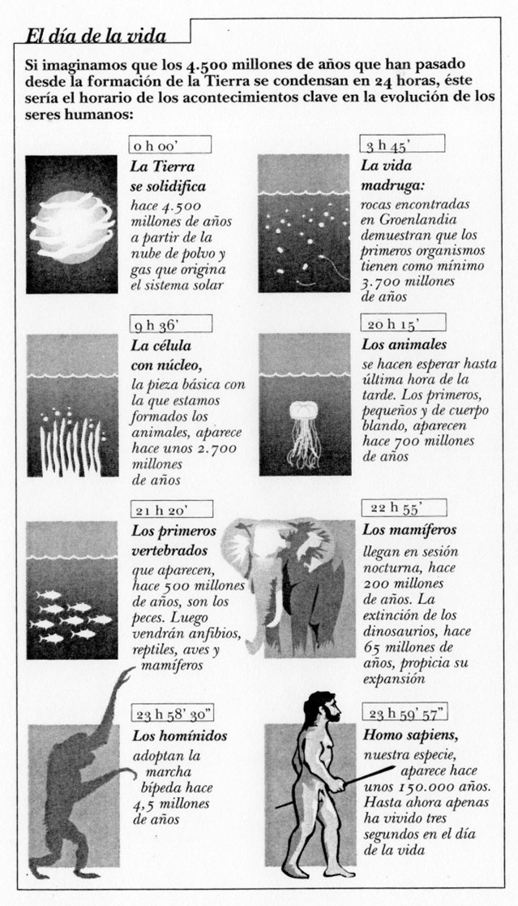

5.1. El lugar del ser humano en la escala zoolgógica
5.1. El lugar del ser humano en la escala zoológica
La especie humana tiene una existencia relativamente reciente. También el ser humano, tal y como lo conocemos, es el resultado del proceso de modificación de las especies vivas: los datos que poseemos señalan que la especie humana no cuenta con una antigüedad muy superior a los 150.000 años, y que apareció como consecuencia de ciertos cambios producidos en especies animales que dan lugar a la aparición de la familia de los homínidos y, en ella, a modificaciones posteriores.

El orden de los primates hizo su aparición en la Tierra hace aproximadamente 60 millones de años. Hace 50 millones de años, hacen su aparición los simiiformes (prosimios), que a su vez se dividen en dos grandes subórdenes, el de los platirrinos y el de los catarrinos. Estos últimos, hace aproximadamente 25 millones de años, se diferencian dando lugar, por un lado, a los póngidos (de donde proceden los grandes monos de la actualidad) y, por otro, a los homínidos (de los que procede el ser humano).
En la actualidad, sólo existe una especie de homínidos: la especie humana. Sin embargo, en el pasado han existido otras especies pertenecientes a esta misma familia, que incluso han coexistido en el tiempo, y que no han conseguido sobrevivir. Así, hace entre 14 y 8 millones de años, se desarrollaron los ramapitecos, y hace aproximadamente 4 millones de años se distinguen dos grandes géneros de homínidos: los conocidos como australopitecos y los homo. Los australopitecos se dividen en los llamados robustos (parántropos) y los llamados gráciles (australopitecos afarensis).
Por su parte, en el género Homo se incluyen diversos tipos de individuos, como el Homo habilis, del que se han encontrado restos de una antigüedad de hasta 2,3 millones de años, y que desapareció hace aproximadamente 1 millón y medio de años, el Homo erectus, cuyos restos permiten datar su existencia entre hace unos 2 millones de años y unos 115.000 años, y finalmente, el Homo sapiens, del que se han encontrado restos de más de 250.000 años de antigüedad. El homo sapiens es el origen más cercano de la especie humana, aunque entre las especies de sapiens pueden establecerse diferencias importantes, por ejemplo entre el Neanderthal y especies más cercanas a nosotros como las de los restos encontrados en Cro-Magnon o Atapuerca.
Todas las especies Homo muestran determinados comportamientos que indican una importante actuación de modificación del medio e incluso la incorporación de elementos simbólicos y culturales. El Homo habilis fabricaba útiles; el Homo erectus usaba el fuego; el de Neanderthal era capaz de fabricar flechas y enterraba los cadáveres de manera ritual.